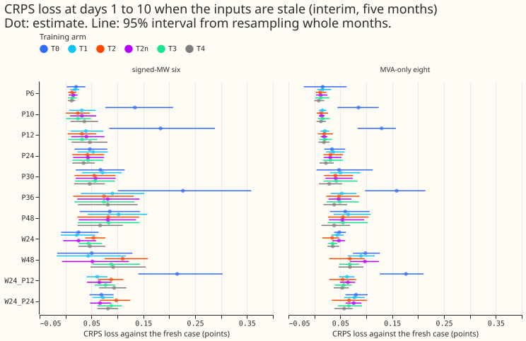
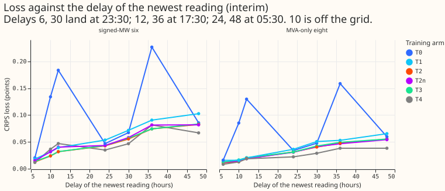
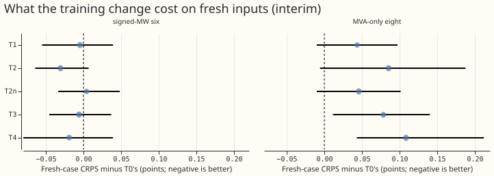
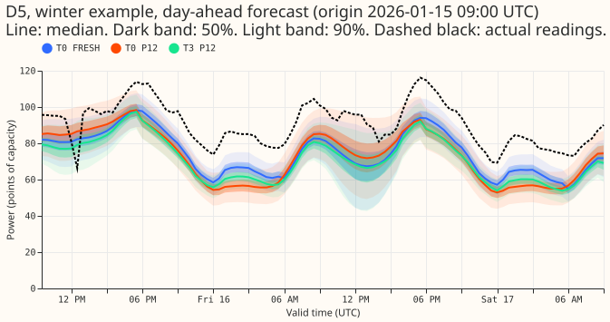
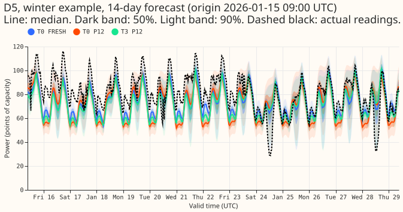
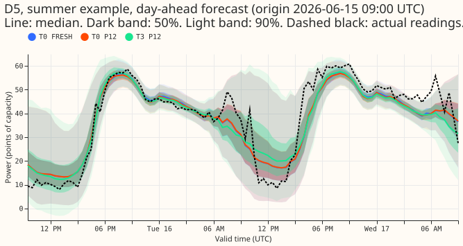
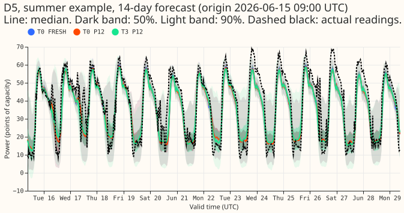

Does training the pooled mixture density network at many origin hours, with the age of the weather forecast and of the newest power reading as inputs, remove its loss from stale inputs?
Take-home message: the pooled network's loss from stale readings was a time-of-day mismatch, and training with the forecast origin at many hours of the day removes most of it. We asked whether the pooled mixture density network (a neural network that outputs a probability distribution; one network for all substations, from experiment 397) can be trained to cope with a weather forecast that is a day old and with power readings that arrive late. Each change to the inputs is an "arm" (key below). Experiment 410 found that the newest power readings arriving 12 hours late raised the continuous ranked probability score (CRPS, lead times of days 1 to 10, points of effective capacity, where one point is 1% of capacity) by 0.20 and 0.15 points; the refit here (T0) gives 0.18 points at the six primary substations with signed meters (the signed six) and by 0.13 at the eight with apparent-power meters (the MVA-only eight). When the network is trained with the origin at eight hours of the day, those losses fall to 0.04 and 0.02 points (arm T1). The pre-registered rule gives "partly supported". Every experiment 410 limit holds at both groups for the main arm T3, but T3's score on fresh inputs is 0.078 points worse at the MVA-only eight, above the +0.03 the pre-registered rule allows for the fresh-case score. The age inputs do not help: T2n, the same training without them, does as well as T2 (and better at one stale-weather arm).

Key to the arms. Training arms (offsets in hours after the 00:00 UTC weather run; each random draw is made once per training row and seed):
| Arm | Origin offset h | Reading delay d | Previous weather run | Origin lags missing | Age inputs |
|---|---|---|---|---|---|
| T0 | 9 | 0 | never | as in the data | no |
| T1 | 9, 12, 15, 18, 21, 24, 27, 30 | 0 | never | as in the data | no |
| T2 | as T1 | 0, 3, 6, 9, 12, 15, 18, 21, 24 | never | as in the data | yes |
| T2n | as T1 | as T2 | never | as in the data | no |
| T3 | as T1 | as T2 | probability 0.25 | as in the data | yes |
| T4 | as T1 | as T2 | probability 0.25 | all three, probability 0.10 | yes |
- Test arms are experiment 410's: FRESH, W24, and W48 (the weather forecast from the run one or two days earlier), Pn (readings delayed by n hours: P6, P12, P24), both at once (W24_P12, W24_P24), and DROP (the three origin lags missing). Four test arms are new. P30, P36, and P48 put the newest reading at the same hour of day as P6, P12, and P24, a day further back (23:30, 17:30, 05:30). P10 lies off the 3-hour training grid.
- Reference columns. S397 is experiment 410's stored pooled network (trained at 09:00 on power with no cleaning rules). S1M is experiment 410's XGBoost model, which is not refitted.
- The age inputs are the hours since the weather run and the hours since the newest reading (3.5 plus d), each divided by 48. The reading age is a linear function of two existing inputs (the lag ages and the lead), so it is redundant by construction; arm T2n tests that.
Results
CRPS loss against each network's own fresh case, days 1 to 10 (points; positive is worse), five
screen months, so every number is interim. The "Fresh CRPS" row is the absolute score. The 95%
month-block intervals are in contrasts_*.parquet and Figure 1. Experiment 410's limits are 0.05
for P6 and P12 and 0.10 for W24, P24, W24_P12, and W24_P24.
Signed-MW six:
| Arm | S397 | T0 | T1 | T2 | T2n | T3 | T4 | S1M |
|---|---|---|---|---|---|---|---|---|
| Fresh CRPS | 3.270 | 3.324 | 3.319 | 3.293 | 3.328 | 3.318 | 3.305 | 3.525 |
| P6 | 0.024 | 0.020 | 0.018 | 0.013 | 0.015 | 0.014 | 0.012 | 0.020 |
| P10 | n/a | 0.134 | 0.031 | 0.024 | 0.032 | 0.024 | 0.036 | n/a |
| P12 | 0.197 | 0.183 | 0.039 | 0.032 | 0.040 | 0.032 | 0.047 | 0.306 |
| P24 | 0.037 | 0.047 | 0.053 | 0.043 | 0.043 | 0.043 | 0.035 | 0.042 |
| P30 | n/a | 0.067 | 0.072 | 0.055 | 0.058 | 0.057 | 0.047 | n/a |
| P36 | n/a | 0.226 | 0.091 | 0.074 | 0.081 | 0.074 | 0.082 | n/a |
| P48 | n/a | 0.085 | 0.103 | 0.082 | 0.082 | 0.083 | 0.067 | n/a |
| W24 | 0.029 | 0.025 | 0.022 | 0.054 | 0.025 | 0.044 | 0.047 | 0.029 |
| W48 | 0.056 | 0.051 | 0.044 | 0.110 | 0.052 | 0.088 | 0.092 | 0.058 |
| W24_P12 | 0.229 | 0.215 | 0.061 | 0.088 | 0.065 | 0.077 | 0.094 | 0.338 |
| W24_P24 | 0.064 | 0.069 | 0.072 | 0.098 | 0.066 | 0.088 | 0.082 | 0.071 |
| DROP | 9.728 | 2.443 | 1.743 | 2.053 | 1.728 | 2.097 | 0.296 | 4.532 |
MVA-only eight:
| Arm | S397 | T0 | T1 | T2 | T2n | T3 | T4 | S1M |
|---|---|---|---|---|---|---|---|---|
| Fresh CRPS | 3.873 | 3.832 | 3.876 | 3.918 | 3.878 | 3.911 | 3.941 | 3.995 |
| P6 | 0.022 | 0.016 | 0.016 | 0.011 | 0.012 | 0.013 | 0.008 | 0.010 |
| P10 | n/a | 0.085 | 0.016 | 0.013 | 0.014 | 0.016 | 0.013 | n/a |
| P12 | 0.151 | 0.130 | 0.020 | 0.019 | 0.019 | 0.021 | 0.019 | 0.098 |
| P24 | 0.031 | 0.034 | 0.036 | 0.031 | 0.031 | 0.031 | 0.022 | 0.041 |
| P30 | n/a | 0.048 | 0.051 | 0.040 | 0.041 | 0.042 | 0.029 | n/a |
| P36 | n/a | 0.159 | 0.053 | 0.047 | 0.047 | 0.049 | 0.038 | n/a |
| P48 | n/a | 0.060 | 0.065 | 0.055 | 0.054 | 0.055 | 0.038 | n/a |
| W24 | 0.047 | 0.048 | 0.044 | 0.034 | 0.047 | 0.036 | 0.035 | 0.032 |
| W48 | 0.093 | 0.098 | 0.090 | 0.068 | 0.098 | 0.068 | 0.069 | 0.064 |
| W24_P12 | 0.197 | 0.177 | 0.063 | 0.054 | 0.065 | 0.056 | 0.054 | 0.130 |
| W24_P24 | 0.076 | 0.080 | 0.077 | 0.067 | 0.076 | 0.067 | 0.058 | 0.072 |
| DROP | 6.504 | 1.899 | 1.700 | 1.822 | 1.667 | 1.831 | 0.318 | 3.684 |
- Time of day explains the loss. P12 falls from 0.183 (T0) to 0.039 (T1) at the signed six (T1 minus T0: -0.149, interval -0.233 to -0.072) and from 0.130 to 0.020 at the MVA-only eight (-0.066, interval -0.120 to -0.007). P36, which hits the same 17:30 hour, falls from 0.226 to 0.091.
- The delay itself adds little loss where the network was trained. In T2 and T3 the loss grows by 0.04 points from P6 to P30, P12 to P36, and P24 to P48 at the signed six, so each day of extra delay at a constant hour of day raises the loss by about 0.04 points. P10, off the training grid, loses 0.024, between P6 (0.013) and P12 (0.032).
- The age inputs do not help. T2 and T2n agree at P6, P12, and P24 (within 0.008 at the signed six). T2 loses more than T2n at W24 (0.054 against 0.025) and W24_P24 (0.098 against 0.066) at the signed six, and less at the MVA-only eight. In absolute terms the two networks score alike at W24 (3.347 against 3.353); T2 improves the fresh-case CRPS by only 0.035, and the improvement does not carry to W24. Feeding T2 a weather age of 9 hours reproduces T2n. Clipping the age to 30 hours changes nothing (both found by the audit described under Checks).
- Missing readings. T4 loses 0.30 (signed six) and 0.32 (MVA-only eight) points in DROP, against 1.7 to 2.4 and 1.7 to 1.9 for T0 to T3. T4's 90% prediction interval is 1.07 and 1.09 times as wide as for fresh inputs, and its coverage of the 95th-percentile quantile (q95) falls by 0.015 and 0.008 (T3: 0.163 and 0.124).
- Against the XGBoost S1M model. T3 loses less than S1M at P12 (0.032 against 0.306) and W24_P12 (0.077 against 0.338) at the signed six, and at the MVA-only eight (0.021 and 0.056 against 0.098 and 0.130).






Tails and fresh-input score
- Tail coverage holds. At both groups, q95 and q99 coverage fall by at most 0.006 and 0.002 in every arm except DROP, P30, P36, P48, and W48, for every training arm. Fresh-case q95 coverage is 0.892 to 0.896 at the signed six and 0.945 to 0.949 at the MVA-only eight, q99 coverage 0.960 to 0.962 and 0.988 to 0.990.
- Score on fresh inputs. At the signed six, T1 to T4 score within 0.031 of T0 (T3 minus T0: -0.006, interval -0.045 to +0.037). At the MVA-only eight they score worse by +0.044 (T1), +0.085 (T2), +0.046 (T2n), +0.078 (T3), and +0.109 (T4); only T3 (interval +0.011 to +0.140) and T4 (+0.043 to +0.212) exclude zero. Per-seed fresh means agree (T0 3.905, T2n 3.959, T3 3.989, T4 4.047). The q95 and q99 pinball losses rise by under 0.03 and 0.01 at the MVA-only eight.
- Seed spread. The standard deviation across the three seeds of one arm's fresh CRPS is 0.01 to 0.05 points. The month-block intervals do not include seed noise. A contrast of two 3-seed averages therefore carries about 0.03 to 0.04 points of extra noise, so the minimum detectable fresh-case contrast is about 0.07 points.
Design, data, and caveats
- Recipe. The recipe is experiment 397's pooled plain network (setting
g09, three Gaussian components, Primary embedding, ensemble mean and standard deviation of seven weather variables), trained with its training loop, early stopping on every twelfth week (held out), and a 1.15 widening of the outer quantiles about the median. Fits are monthly refits on the 24 months before the refit, for the 5 screen months and three seeds per arm. The 90 fits took 14 to 75 seconds each on the GPU. Code reused from experiments 87, 397, and 410 is imported, not copied. - Cleaned data. Flagged
substation_zerohalf-hours are missing in lags and dropped from targets and scoring actuals. The numbers of flagged half-hours in the 5 test months are 153, 11, 0, 3, and 0. In training, 51,600 to 53,200 half-hours per fold are missing: the flagged half-hours, all half-hours before 2025-03-01 at substations D15 and D18, and unobserved half-hours. - Rows. Held-out weeks purge 15 days before and 9 days after, because a delay of 24 hours moves a lag a day back. Each random draw (origin hour, delay, weather run, missing lags) is made once per training row and seed, not once per epoch.
- Reproduction gate. T0's fresh CRPS is 3.324 (signed six) and 3.832 (MVA-only eight) against the stored network's 3.270 and 3.873. The audit could not explain the 0.054 gap at the signed six (1.5 standard errors of a three-seed difference; the MVA-only eight shows the opposite sign). Every contrast here uses T0 and so does not depend on it.
- Checks. The median forecast minus the mean forecast is -0.23 to -0.27 points at the signed six and -0.39 to -0.47 at the MVA-only eight in every training arm. The error of the median forecast moves with the quantile score: T0 P12 raises the median's mean absolute error by 0.33 points at the signed six (5.81 to 6.14), against 0.05 for T3. Triggers fired: a nested arm beats the arm that contains it (T2 against T2n at W24), a control moves more than expected (T0's DROP loss is 2.4 points against 9.7 for the stored network), and the results contradict Predictions 2, 3, and
- A fresh Sonnet audit re-derived the CRPS of T0, T2, T2n, and T3 in four arms by its own code (largest difference 0.0002), found no leakage in the training-row and scoring code it read, and explained the two anomalies.
- Audit finding on DROP. The D15 and D18 start cut leaves 9 times as many training rows with all three lags missing in T0 (0.20%) as in experiment 397's rows (0.022%). A refit of T0 without the cut loses 9.1 and 6.4 points in DROP, like the stored network. T0's DROP loss is therefore a side effect of the start cut, and T4's 0.30 should be read against 2.4 (with the cut) and 9.1 (without).
- Prediction outcomes. Prediction 1 held for P12 (0.039 and 0.020) and P6, and failed for P24 at the signed six (0.053 against 0.05). Prediction 2 failed at W24 (T2's loss is 0.029 above T0's) and held for the delay arms, W24_P12 (0.088), and W24_P24 (0.098). Prediction 2n failed at W24, W24_P12, W24_P24, W48, and DROP at the signed six, and at W48 and DROP at the MVA-only eight. Prediction 3 held for W24 (0.044) and W48 above W24, and failed for W24_P12 (0.077) and W24_P24 (0.088). Prediction 4 held at the signed six (0.043, 0.043, 0.040 in T2) and failed at the MVA-only eight (0.029, 0.029, 0.024). Prediction 5 held at the signed six and failed at the MVA-only eight. Predictions 6, 7, and 8 held. Prediction 9 held (P10 within 0.004 of the interpolation).
- Decision rule. T3 meets every experiment 410 limit at both groups on point estimates; its W24_P24 upper bound at the signed six is 0.109, above 0.10. The fresh-case score rise at the MVA-only eight (+0.078) exceeds +0.03, so the verdict is "partly supported". T1, T2n, T2, and T4 also meet the limits. The experiment 410 limits were proposed without evidence, and the numbers are given beside them for the maintainer to judge.
- Caveats. 5 test months give wide intervals. The audit's mechanism for T2's W24 result (age and origin hour are tied in training and decoupled at test) is inferred, not tested. The scored lead range, days 1 to 10, matches NGED's horizon. No XGBoost model was refitted, and P30, P36, P48, and P10 were scored for the neural networks only.
- Untested next steps. T1 could be tested over the full scored year, and the fresh-case score at
the MVA-only eight with more seeds. Training with the three lags sometimes missing (T4) would
prepare the neural network for absent readings in production. The weather age could be decoupled
from the origin hour in training before the age input is used again. Fits and forecasts:
data/ml-experiments/00422-*/work/(not in git).